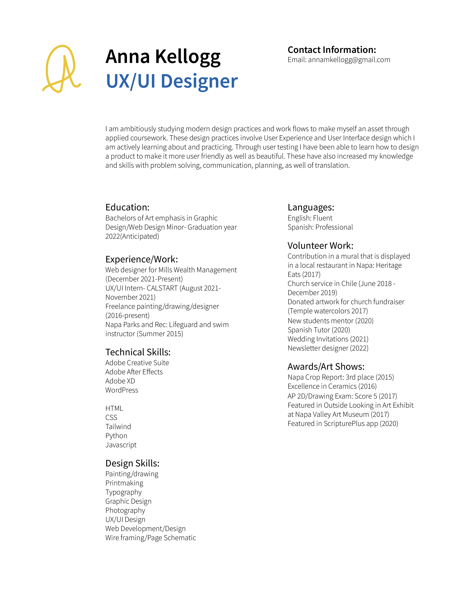

Hello,
I'm Anna Kellogg
UX/UI Designer
Senior at BYU-Idaho
I am a senior at Brigham Young University-Idaho. I am ambitiously studying modern design practices and work flow to make myself an asset through applied coursework.
These design practices involve User Experience and User Interface design which I am actively learning more about and practicing. Through user testing I have been able to learn how to design a product to make it more user friendly as well as beautiful.
